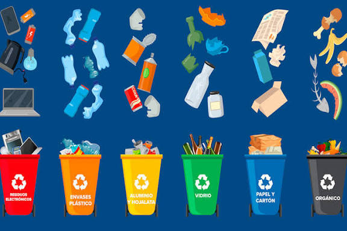

Separar la basura correctamente es una de las acciones más importantes para proteger el ambiente.
Restos de comida, cáscaras, hojas o café molido. Se pueden transformar en compost.
Plásticos, latas, botellas y cartón limpio. Se reutilizan para crear nuevos productos.
Pañuelos usados, envoltorios sucios o vidrios dañados. Van al relleno sanitario.
Con EcoConti aprenderás de forma simple y divertida a tomar mejores decisiones para el ambiente.
Aprende las claves para reciclar correctamente y reducir tu impacto ambiental.
Aprende jugando y pon a prueba tus conocimientos.
Entiende cómo tus acciones diarias influyen en el planeta.
Pequeños cambios pueden generar grandes resultados.
Aprender jugando hace que el conocimiento se quede contigo.